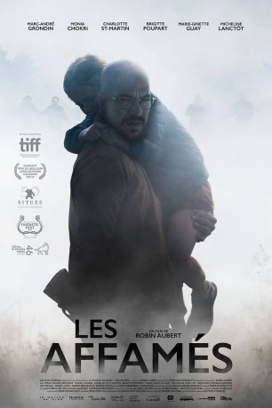

#8441 Hungrig
Alternativ: Ravenous (Englischer Titel)
 
 IMDB-Wertung: 6.0 / 10
IMDB-Wertung: 6.0 / 10  Metascore: 0
Metascore: 0 
Nachdem ein Virus große Teile der Menschheit in gefährliche Fleischfresser verwandelt hat, streifen Bonin (Marc-André Grondin) und Tania (Monia Chokri) – wie so viele andere Überlebende – ohne Hoffnung und ohne jedes Ziel durchs Land, immer nur daran denkend, weiter zu überleben. Als sie in einem verlassenen Haus auf das Waisenmädchen Zoé (Charlotte St-Martin) treffen, nehmen sie sich ihrer an und haben nun ein Ziel: das Kind zu beschützen. Diesen Schutz könnte ein Bunker bieten. Gemeinsam mit weiteren Überlebenden versuchen sie diesen zu erreichen, doch die untoten Zombies lauern überall…
Jahr: 2017
Dauer: 103 Minuten
FSK:
Land: Kanada Studio: La AventuraTonspuren:
Untertitel: Deutsch,
Auflösung: 1080p (1800x1080) Größe: 3983 MB
Genre: Horror, Drama
Regisseur: Robin Aubert
Drehbuch: Robin Aubert
Soundtrack: Pierre-Philippe Côté
Darsteller:
- Marc-André Grondin als Bonin
- Monia Chokri als Tania
- Micheline Lanctôt als Pauline
- Marie-Ginette Guay als Thérèse
- Didier Lucien als Vézina
- Robert Brouillette als Paco
- Patrick Hivon als Race driver
- Charlotte St-Martin als Zoé
- Brigitte Poupart als Céline
- Édouard Tremblay-Grenier als Ti-Cul
- Luc Proulx als Réal
- Martin Héroux als Demers
Datei: X:\2017(G-M)\Hungrig (2017, FSK, 1800x1080).mkv seit 05.03.2018
Festplatte: HD 2017(A-Z)-2018(A-F)
 Es gibt insgesamt 148 Filme in der Gruppe '2017(G-M)'
Es gibt insgesamt 148 Filme in der Gruppe '2017(G-M)'